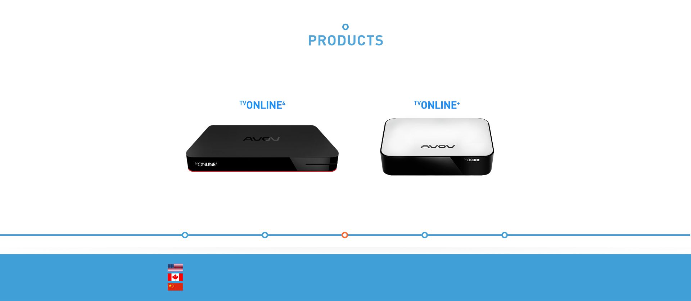

Fully customized FREE MW
solution, Comes with complete
Billing system
Nova Middleware is an IPTV/OTT platform, which includes
the complete system of processing and distribution of streams,
user applications and administration of customers. The advantage is that the entire system
comes from one supplier.
This ensures its reliability and eliminates complicated and
expensive integration of multiple systems from different suppliers.
IPTV/OTT Solutions
Nova Middleware Solution
Live Channels
VoD
CRM/BILLING
Multi-platform Player
Modular
White-labeling option
Hospitality Solutions
Hotel Solution
Hospital Solutions
- Comprehensive Tv Solutions
- Scalable Solutions
- Infrastructure
- Patient Powered Experience /
Patient Engagement Applications
Digital Signage
What is Digital Signage
Digital Contents
Market Applications and Benefits
Solutions Available
TURNKEY IPTV/OTT
Solutions
AVOV Technology, Inc. provides a complete end-to-end turnkey IPTV/OTT solution that offers any service provider the ability to start and IPTV service instantly. The Nova Middleware solution consists of IPTV middleware servers; HD IPTV 4k set top box, PVR, complete customizable EPG, HD video on demand servers. The Nova Middleware solution delivers unparalleled digital TV user experience that’s superior to existing cable and satellite TV.
Nova Middleware is also easy to deploy and much lower cost than traditional IPTV solutions. Nova Middleware will enable broadband providers to launch theirown IPTV service easily without complicated system integrations. The heart of Nova Middleware solution is the fact it’s a ready to deploy, turnkey IPTV solution that can produce HD streams seamlessly over the internet with a low bit rate.
MAIN FEATURES
Operator's dashboard
128 AES encryption
Content Management System
Real-time statistics
API for developers
Subscriber's dashboard
Customer Management System
Load-balancing
Ad insertion
Billing-integration with PayPal, Authorize.net, Robokassa and other payment systems
LIVE CHANNELS
A real-time encoding/transcoding solution Nova Transcoder is the most powerful software product on the market providing uncompromising quality. Functionality coming with the encoders allows broadcasters and service providers to deliver multi-feature services in resolutions up to Full HD 1080i/p & 4K. Nova Transcoder solutions are very simple to use and cost-effective, they are not dependent on any particular hardware thus making it possible for you to run it on any third party hardware of your choice. Coding on 1U server platform at maximum quality settings: up to 5 channels AVC \ H.265 Full HD, or up to 25 channels AVC \ H.265 SD.
MAIN FEATURES
Ability to increase the number of channels, or shift to HDTV broadcasting without upgrading delivery channels
Deinterlace
Extreme effectiveness of computing resources utilization significantly cuts expenses for IPTV head-end hardware
Crop
Highest video quality, unachievable for hardware solutions
Simple WEB interface to configure the server
White label
Support of Quick Sync Video hardware acceleration
Frame Rate Conversion
Time shift
VIDEO on DEMAND
Make your content available for VoD services with Nova Middleware high-performance software. Over-the-Top (OTT) Internet Television involves the delivery of video content from video service providers to end users over the public Internet. OTT services can be accessed by anyone who has a suitable high-speed connection to the Internet.
Nova Middleware offers a turn-key OTT TV Platform for enterprises.
The platform provides end-to-end solution including:
ㆍVideo capturing from any source (DVB, IP, File archive)
ㆍMiddleware services for operators
ㆍAdaptive video streaming to various devices
With Nova Middleware you c.an build an IPTV/OTT network of an unlimited scale. Our team will provide professional assistance in setup and configuring the solution in your location and training of your staff.
CRM/Billing
Nova Middleware CRM / Billing system manages customer accounts. It allows customers to add / remove users and devices to their account, activate / deactivate services (live, VoD, recording, etc.),
and carry out a lot of other settings. The Billing system works as aprepaid and postpaid system, it keeps records of these services and payments to customers and automatically issues invoices. The system works with bank accounts and payment gateways.
MODULAR
Nova Middleware is a modular platform. You can use it as a whole or only some parts that can be implemented into your existing system.
Nova Middleware uses streaming protocols MPEG DASH / HLS and DRM Marlin. On request, it is possible to integrate other technologies and modules.
White Ladeling Options
Nova Middleware is a fully customizable design, with your logo insertion and domain name.
Nova Middleware Core is a multi-operated web or local application that controls all modules of thesolution and allows theservice provider to manage over IPTV/OTT business.
MAIN FEATURES
Operator's dashboard
Content Management System
Real-time statistics
API for developers
Subscriber's dashboard
Customer Management System
Load-balancing
Ad insertion
Billing-integration with PayPal, Authorize.net, Robokassa and other payment systems
ADD VALUE TO YOUR
HOTEL BRAND
Having a TV solution branded with your graphical profile will make a lasting impression on your guests.Check some of our GUI designs to the right!
Nova Middleware allows you to add your own background images and customize the content to make it unique in the eyes of your guests.
Thanks to an easy-to-use web portal you will enjoy updating the content and provide guests with fresh,relevant information from anywhere you have access to an internet connection. Front desk, back office or from home, Nova Middleware gives you the freedom to update the hotel TV content from anywhere at any time.
MAIN FEATURES
Live/VOD/Audio
Room Service
Call Taxi
Morning call
Leisure activities
Check out
Live TV
IPTV streaming software, Catch Up, Time Shift, Content Protection System, High Performance and Picture Quality.
Video On Demand (VoD)
Movies and TV Shows. Categories. Automatically Content Preparatory Mode, Adaptive Streaming.
Middleware Solution
IPTV streaming software, Catch Up, Time Shift, Content Protection System, High Performance and Picture Quality.
Ad Insertion
Video, Image or Text Ads with targeting on your audience.
Encoder
Embeded Encoder MPEG-2/AVC(H.264) OR VEC(h.265)
coaxial cable 50EA Input
LIVE STREAMING SERVER
sv-eslm*3EA
Organization of channel and create file for streaming.
Live content streaming
VOD STREAMING SERVER
vod server
Internet Network
MANAGEMENT SERVER
middleware server
cms/billing/security/
Statistics/metadata/
realtime/notice/news/
rss/load balanced/
mdf manage
HOTEL
Hotel room count*STB
BILLING
Hotel conter
BED SOLUTION
We are engaged in improving the patient-hospital experience. As technology leaders, we provide custom support and solutions for all scalable hospital needs with easy to manage software for patients, nurses, and doctors. As technology changes, we will be there to help create real-time improvement strategies while consistently working to improve technology for the hospital. We are a scalable solution that helps accommodate hospital’s long and short term goals.
We do this by providing patients a comforting at-home experience with interactive patient engagement systems to help the patients and staff work together in the recovery process. Our enhanced tools improve hospital efficiencies to help with therecovery process and consider various avenues of revenue generation that were not present before for the patient-family-caregivermodel.
IPTV solutions
We are a full solutions content distribution company as well.We are able to use the Internet Protocol Television service to manage, monitor live streams and use Video on Demand .
Flexible solutions for balance costs and in-room equipment setup for interactive capabilities. Converting Coaxial platforms into IPTV solutions.
Completely customizable interface and programming.
Supports two-way communication. Multi-Language Support.
Monitoring Solution Management / Staff
Web Based three-way interaction
Three-way web-based communication platform between patients, doctors and family.
Medicine Reminder
Set up alarm sets to remind patients to take their medication.
Automatic Email Alert
In case a patient's measurement exceeds the preset level, SMB automatically send an email notification to the designated email accounts.
Notice Service
Receive message from doctors or family members.
Comprehensive Peripherals support
Interface to different vital sign measurement devices.
Direct Access Pillow Speakers
Easy to use remote control system as at home.
Patients would be in full control with the remote/speaker.
Advanced LED televisions
Media Table Smart Tv
Infection control mechanism
Easy to clean design Scratch Free design
swivel capabilities
small to large screen capabilities
Android touch screen displays
WHAT IS DIGITAL SIGNAGE?
This is new technology that encompasses the use of different LCD LED and Projection. These units can be altered to large scale or small scale. Digital signage also uses the digital images and video streaming media or for real-time information. In the industry, there are many other names for this type of technology. Narrowcasting, Screen Media, Place Media, Digital Merchandising, Digital Media Networks, Captive Audience Networks. This will also help and create value-addedprogramming that the end user was not expecting but waslooking for.
You can find this new form of advertisements found in private or public spaces, malls restaurants, bars. Digital signage also has the flexibility and versatility for immediate changes as needed. The industry is over a $15 Billion Dollar Industry, and it is expected to jump to over $24 Billion dollars by the year 2020
Publicity
· News · Notice
· Customized notice
Advertising VOD/PICTURE
Customized advertising or streaming
Information Widget
· Weather
· Stock market
· Date/time
· Traffic
Management
Nova Digital Signage
Control
Internet Network
Client
STB
Hardware
LED Display
Mount
Custom enclosure
TV solution
User
DIGITAL CONTENTS
Digital contents relate to content management systems that have been on the rise for the past several years. Traditional content designers through firms do not provide real-time ROI and are often quite expensive. Below are some of the digital signage formats. The applications used.
BASIC LEVEL
Text that will scroll across the screen ( example news feeds ) The text can be as versatile as of coming out of any direction in large or small print for the end user and for the client to configure.
MEDIUM TO ADVANCE
IMAGES & VIDEO
This could be any format for from jpeg,tiff,png,bmp to flv.mkv,mpeg etc.
ADVANCE
INTERACTIVITY
This is a combination of Images, Video, Texts and custom user interface for the end user to be able to provide input and gather data to help clients reach their potential demographic and learn customer behavior
Interactivity with smart phones, SMS, Bluetooth,
MARKET APPLICATIONS
Digital signs are used for many different purposes, and there is no definitive list. However, some of the most common applications of digital signage are listed below
EDUCATION
Kindergarten to Grade 12,Universities,Colleges ,Technical and Professional Schools
HOSPITALITY
Hotels and Resorts,Health Clubs, Gyms, Spas, Bars, Restaurants, Theme Parks and Attractions Gaming
RETAIL
Clothing Stores,Pharmacies, FoodServices, Niche Speciality Stores
FINANCIAL
Banks,CreditUnions,
Investmentcompanies,
Insurance companies
CORPORATE
LobbyorShowroom,
CallCenters,ConferenceRooms,
Car Dealership
HEALTH CARE
Doctor Dentists Offices, Hospitals and Clinics, Assisted Living & Nursing Homes, Rehab and Physical Therapy.
GOVERNMENT
Community Centres, Government offices and agencies, Recreation and Athletic Facilities, Convention Centres.
TRANSPORTATION
Airports, Train Stations & Bus Depots
PLACES OF WORSHIP
Churches, Synagogues, Mosques
BENEFITS OF
DIGITAL SIGNAGE
It is important to have multiple reasons on investing into digital signage. The profit must outweigh the costs and help increase sales and bring in different revenue channels. There are also other levels that may be going unnoticed, such as employee efficiency, easier training environments. Below are some reasons to switch over to Digital Signage:
Increase in sales due to more information from the signage. Intensified brand recognition. There are also up-sell options whichhelp with promotion and direct targeted information.
The ability to work with your suppliers and vendors to help increase or create collaborative advertisements. The possibility to sell advertising space is also an option as vendors are seeking the benefits of low-cost advertising.
Advertisers will have more control and the ability to cut out middlemen and speciality firms that limit and control
Improve training environments to deliver information quicker and help change costly changes in any industry (example shipping, order processing, manufacturing)
Modern technology needs are a must in today's smarter audiences. The Media savvy consumer is looking for new changes to help get information and use that information to compare market prices and help make decisions on purchases.
Real time customization allows near immediate changes
SOLUTIONS AVAILABLE
Digital contents relate to content management systems that have been on the rise for the past several years. Traditional content designers through firms do not provide real-time ROI and are often quite expensive. Below are some of the digital signage formats. The applications used.
VIDEO WALL
covers a large area with very minimal maintenance per tv screen from 4 screens to as many screens are needed
WAY FINDING
With several options to pick from, we are able to help visitors of a school,office or shopping center help relay real-time information. Visitors will be able to find maps, and get detail.
DIGITAL MENU BOARDS AND
Customizable designed boards for any type of food establishment.
MOBILE APPS/QR CODE OPTIONS
Customizable mobile apps for any type of business with QR capabilities.
INTERACTIVE DISPLAYS
Allowing the client/vendor to connect directly to the end user and monitor their behaviour.
The ability to gear rice,promotion and build brand awareness through these type of displays.
DIGITAL BILLBOARDS
Large scale billboards with easy to access update customizable interfaces
WIDGETS AND VENDOR SPECIFIC SUGGESTIONS
Up To Date Weather Info / Emulation of any live feed content from any website / Traffic warnings / Instant emergency warnings

AVOV DEVICES WITH NOVA MIDDLEWARE
NOVA IS ONLY FOR AVOV
6905 Oslo Cir STE J Buena Park, CA 90621, USA
Unit7. 110 Adesso Dr Vaughan, ON L4K 3C5, Canada
8/F, Floor,Baojie'an Tading Center, Labour RD, Xixiang Street, Baoan District, Shenzhen, China
1-855-449-AVOV (2868)
gary@avov.tv
hans@avov.tv